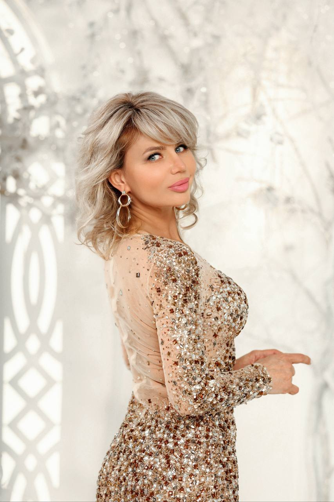
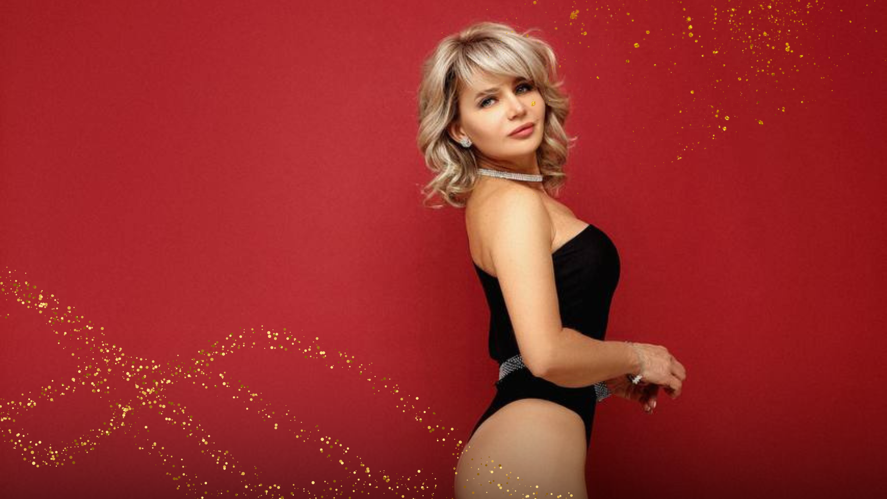
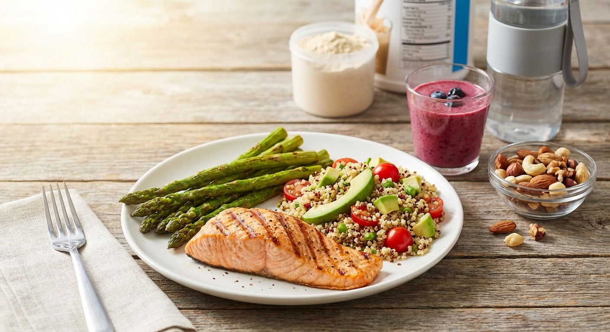

Пора расцветать по-настоящему
Пусть эта весна станет временем,
когда ты влюбишься в своё отражение
надолго
Сейчас — идеальный момент, чтобы всего за несколько недель:
Сбросить упрямые килограммы
Придать рельеф телу и контур лицу
Вернуть энергию и почувствовать лёгкость
Провести Весну и Лето в лучшей форме
Инвестируйте в себя и становитесь той, кем всегда хотели быть!
В честь 8 марта ты можешь приобрести точечные программы, которые дают видимый результат уже через 10 дней по супер-стоимости!
Выбирай свою весеннюю трансформацию
Подари себе весеннее преображение

Лот №1: «ВЕСЕННИЙ КОНЦЕНТРАТ»
ТРЕНИРОВКИ + РЕЦЕПТЫ + ГАЙД ПО НУТРИЦЕВТИКАМ
«В нём я собрала свои самые любимые и эффективные тренировки, которые делаю сама, когда у меня мало времени, но нужен максимальный результат. И добавила к ним мои любимые рецепты, от которых вы будете в восторге.»
25 упражнений на разные группы мышц, которые вы можете делать и дома, и в зале.
Сборники рецептов, с которыми любое похудение будет в кайф! ПП пирожки, брауни, хачапури, буррито и другие мои любимые аппетитные блюда — без вреда для фигуры.

Лот №2: «Скульптор» Ягодицы + Пресс
УПРУГАЯ И ПОДКАЧАННАЯ ПОПА + ПЛОСКИЙ ЖИВОТ
Комплекс из 69 упражнений для создания идеального силуэта. Эффективно убираем бока и подтягиваем ягодицы. Ты будешь сиять в облегающей одежде! Подтянутые, округлые ягодицы и плоский живот + невероятная легкость благодаря улучшению пищеварения и общему тонусу тела

Лот №3: Программа тренировок "королевский комплекс" Осанка + Лицо
УПРАЖНЕНИЯ НА ОСАНКУ + ВИДЕО ПО УХОДУ ЗА ЛИЦОМ
Видимый антиэйдж-эффект! Расправляем спину (минус 10 лет визуально!), убираем второй подбородок, холку, придаем лицу контур и сияние. Возвращаем молодость и красоту!

Лот №4: "ВСЕ ВКЛЮЧЕНО"
🌟 Комбо-Тариф "ALL INCLUSIVE"
Это максимальная выгода и полная программа преображения! Включает в себя ВСЕ 5 самых эффективных комплексов: Ягодицы, Пресс, Осанка, Лицо, Руки.
Результат: Полная трансформация и гармония тела - подтянутость, грация, молодость. Идеально для тех, кто хочет получить все инструменты для преображения сразу и не ограничиваться одной зоной..
Подарок к Лоту №4
Выбирая комплекс из 5 программ, первые 100 участников получают:

Лот №5: "Питание"
Только питание. Легкий старт к здоровью и стройности
Что в этом тарифе? Весь блок по питанию из программы марафона "Лучшая Версия Себя". Самостоятельный формат, без тренировок.
Для тех, кто хочет научиться самостоятельно составлять здоровый, полноценный рацион под свои запросы из любимых продуктов или просто питаться по готовому сбалансированному, вкусному меню и получать результат в виде потерянных килограммов.
Ключевые особенности
✅ Мгновенный доступ. Все программы открываются в удобном мобильном приложении сразу после оплаты. Доступ 3 месяца.
✅ Всё без зала. Все комплексы разработаны для занятий дома, с минимальным инвентарём.
Почему тысячи женщин доверяют свою трансформацию Наталье Макаренко?

- Профессиональный дипломированный Фитнес-Тренер.
- 53 года и доказательство того, что возраст — это только цифра.
- Автор популярного блога о фитнесе и питании с миллионами просмотров и высочайшим доверием аудитории в 165 тысяч подписчиков.
"Мне 53, и я выгляжу лучше, чем в 35. Я прошла этот путь сама и точно знаю, какие методики работают, а какие только тратят время, особенно после 40-ка. Я не даю теорию, я делюсь своим опытом.
Моя миссия — помочь женщинам в любом возрасте почувствовать себя красивыми, счастливыми и желанными"
Отзывы
"С днём рождения меня!!! 😇 Девочки мне сегодня 47 🎉🎊
Я хочу поблагодарить @Nataliii240672 Наталью, за то что помогла мне прийти к телу моей мечты 💫💫💫 С августа по сегодняшний день — 7 кг. 💃💃💃💃 Я очень счастлива находиться в этом весе, в этом теле и очень вкусно и правильно питаться 👌 Наталья благодарю Вас ❤️❤️❤️❤️❤️❤️❤️❤️❤️❤️❤️❤️❤️❤️"
"Программа Королевская осанка это просто магия. Спина перестала болеть, а отражение в зеркале радует с каждым днем. Рекомендую всем!"
"Добрый день Наталья и Ваша команда. Искренне благодарю Вас за Марафон, за Ваш труд, поддержку и главное Мотивацию. В течении двух месяцев я старалась выполнять все Ваши рекомендации, не всегда получалось, порой были срывы , лень , простуда 🤧.
Но ☝️ тем не менее я скинула 5 кг и это было Вау 🤩. Всем своим знакомым , друзьям, родственникам рекомендую Вас ! Буду дальше работать над собой , продолжать добиваться поставленной цели 🎯! Вам , от всей души желаю процветания, успехов и удачи в Вашем деле ❤️❤️❤️😘🥰🍀!"
Часто задаваемые вопросы
Да, конечно! Программы подходят как для новичков, так и для уже практикующих, но кто хочет получить новые результаты и мотивацию.
Смотря какие проблемы со здоровьем. Упражнения разработаны для тех, кому не запрещены тренировки. Если у вас есть серьезные ограничения по физическим нагрузкам, пожалуйста, проконсультируйтесь со своим лечащим врачом. Или напишите в службу Заботы — Whatsapp +79167587021, вам передадут мой ватсап. Я забочусь о вашем здоровье, и моя цель — помочь вам, не навредив.
В одной тренировке 4-5 коротких упражнения. Для большей эффективности лучше делать ее всю, это займет 20-30 минут. Но вы можете и разбивать тренировки или делать понравившиеся вам упражнения отдельно, буквально по 5-10 минут в день. Я сделала программы максимально удобными и эффективными, чтобы они легко вписались в ваш рабочий и жизненный график без стресса.
Нет! Вовсе не обязательно. Я подготовила упражнения, которые можно делать дома, в поездке, на даче (с минимальным инвентарем, который легко заменить подручными вещами). Вы можете делать их где угодно.
Программы для ягодиц, пресса, осанки, рук больше направлены на улучшения форм и самочувствия, но бонусом вы точно сможете получить минус 2-5 кг за месяц, при регулярном подходе, особенно если подключите более правильное питание. Тариф с полной базой знаний марафона "Лучшая версия себя" (лот №6) разработан именно для похудения. Важно помнить, что мы нацелены на долговременный результат, а не на временные показатели. Если вы продолжите заниматься, сделаете тренировки образом жизни — вы сможете победить любые цифры!
После оплаты вам придет ссылка на закрытую платформу — удобное, красивое мобильное приложение, где будут доступны все тренировки, видео уроки и дополнительные бонусные материалы. Вы сможете смотреть их в удобное для вас время.
Доступ к приложению с программами — целых 3 месяца. По окончанию, можно будет продлить доступ со скидкой.
В рамках предложенных пакетов обратная связь не предусмотрена. Все видео записаны с пояснениями, дополнительной озвучкой и максимально понятны для самостоятельного прохождения. Для тех, кто хочет обратную связь, есть возможность приобрести персональные консультации и сопровождение на 1 или 3 месяца. По этому вопросу напишите в службу Заботы — Whatsapp +79167587021
По этому вопросу напишите в службу Заботы — Whatsapp +79167587021